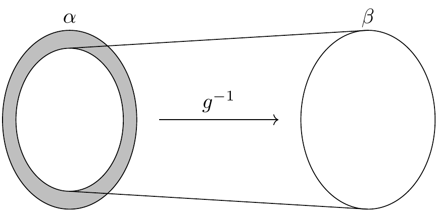

4. 集合和函数
集合、关系和函数为所有数学分支的构造提供了统一的语言。由于函数和关系可以用集合来定义，因此公理集合论可以作为数学的基础。
作为 Lean 基础的原始概念则是 类型，包括在类型间定义函数的方法。Lean 中的每个表达式都有一个类型：自然数、实数、从实数到实数的函数、群、向量空间等等。也有的表达式是类型，也就是说，它们的类型是 Type 。Lean 和 Mathlib 提供定义新类型的方式，以及定义这些类型的对象的方式。
从概念上讲，你可以把类型看作是一组对象的集合。要求每个对象都有一个类型有一些好处。例如，它使得重载像 + 这样的符号成为可能，有时它还能缩减冗长的输入，因为 Lean 可以从对象的类型中推断出大量信息。当你将函数应用于错误的参数个数，或将函数应用于错误类型的参数时，类型系统让 Lean 可以标记错误。
Lean 的库确实定义了初等集合论概念。与集合论不同的是，在 Lean 中，集合总是某种类型的对象和集合，例如自然数集合或从实数到实数的函数的集合。类型和集合之间的区别需要一些时间来适应，本章将带你了解其中的要点。
4.1. 集合
设 α 是任意类型，则类型 Set α 是 α 中的元素组成的集合。这一类型支持常规的集合论运算和关系。例如， s ⊆ t 表示 s 是 t 的子集（ ⊆ 符号是 \ss 或 \sub），s ∩ t 指交集（ \i 或 \cap ）， s ∪ t 指并集（ \un 或 \cup ）。库中也定义了集合 univ, 它包含类型 α 的全部元素，以及空集 ∅ （ \empty ）。给定 x : α 和 s : Set α, x ∈ s 表示 x 属于 s （ \in 或 \mem ，涉及集合成员关系的定理的名字经常含有 mem）。 x ∉ s （ \notin ）是 ¬ x ∈ s 的缩写。
证明关于集合的命题的一种方法是使用 rw 或 simp 来展开定义。在下面的第二个例子中，我们使用 simp only 告诉化简器只使用我们提供的列表中的等式，而不是整个数据库中的等式。不同于 rw, simp 可以在全称或存在量词内实施化简。
variable {α : Type*}
variable (s t u : Set α)
open Set
example (h : s ⊆ t) : s ∩ u ⊆ t ∩ u := by
rw [subset_def, inter_def, inter_def]
rw [subset_def] at h
simp only [mem_setOf]
rintro x ⟨xs, xu⟩
exact ⟨h _ xs, xu⟩
example (h : s ⊆ t) : s ∩ u ⊆ t ∩ u := by
simp only [subset_def, mem_inter_iff] at *
rintro x ⟨xs, xu⟩
exact ⟨h _ xs, xu⟩
本例中，我们打开了 Set 命名空间以用更短的定理名访问定理。事实上，我们完全可以不用 rw 和 simp ：
example (h : s ⊆ t) : s ∩ u ⊆ t ∩ u := by
intro x xsu
exact ⟨h xsu.1, xsu.2⟩
这叫做 定义规约（definitional reduction） ：为了理解 intro 命令和匿名构造子，Lean 不得不展开定义。下面的例子也说明了这一现象：
example (h : s ⊆ t) : s ∩ u ⊆ t ∩ u :=
fun x ⟨xs, xu⟩ ↦ ⟨h xs, xu⟩
为了处理并集，我们可以使用 Set.union_def 和 Set.mem_union 。由于 x ∈ s ∪ t 展开为 x ∈ s ∨ x ∈ t, 我们也可以使用 cases 策略强制要求定义规约。
example : s ∩ (t ∪ u) ⊆ s ∩ t ∪ s ∩ u := by
intro x hx
have xs : x ∈ s := hx.1
have xtu : x ∈ t ∪ u := hx.2
rcases xtu with xt | xu
· left
show x ∈ s ∩ t
exact ⟨xs, xt⟩
· right
show x ∈ s ∩ u
exact ⟨xs, xu⟩
交集比并集优先级更高，表达式 (s ∩ t) ∪ (s ∩ u) 中不必需使用括号，但使用括号会更易读。下面是更简短的证明。使用 rintro 时，有时我们需要使用括号包围析取模式 h1 | h2 使得 Lean 能正确解析它。
example : s ∩ (t ∪ u) ⊆ s ∩ t ∪ s ∩ u := by
rintro x ⟨xs, xt | xu⟩
· left; exact ⟨xs, xt⟩
· right; exact ⟨xs, xu⟩
作为练习，试着证明反向的包含关系：
example : s ∩ t ∪ s ∩ u ⊆ s ∩ (t ∪ u) := by
sorry
库里也定义了差集 s \ t （反斜线以 \\ 输入）。表达式 x ∈ s \ t 展开为 x ∈ s ∧ x ∉ t 。可以使用 Set.diff_eq 和 dsimp 或 Set.mem_diff 手动重写它，而下面的两个证明展示了这一点和更简洁的方案。
example : (s \ t) \ u ⊆ s \ (t ∪ u) := by
intro x xstu
have xs : x ∈ s := xstu.1.1
have xnt : x ∉ t := xstu.1.2
have xnu : x ∉ u := xstu.2
constructor
· exact xs
intro xtu
-- x ∈ t ∨ x ∈ u
rcases xtu with xt | xu
· show False; exact xnt xt
· show False; exact xnu xu
example : (s \ t) \ u ⊆ s \ (t ∪ u) := by
rintro x ⟨⟨xs, xnt⟩, xnu⟩
use xs
rintro (xt | xu) <;> contradiction
作为练习，证明反向的包含关系：
example : s \ (t ∪ u) ⊆ (s \ t) \ u := by
sorry
要证明两个集合相等，只需证明任一集合中的每个元素都是另一个集合中的元素。这个原理称为“外延性”， ext 策略可以用于处理它。
example : s ∩ t = t ∩ s := by
ext x
simp only [mem_inter_iff]
constructor
· rintro ⟨xs, xt⟩; exact ⟨xt, xs⟩
· rintro ⟨xt, xs⟩; exact ⟨xs, xt⟩
删除 simp only [mem_inter_iff] 一行并不会影响证明。下面的单行证明更简洁但难读：
example : s ∩ t = t ∩ s :=
Set.ext fun x ↦ ⟨fun ⟨xs, xt⟩ ↦ ⟨xt, xs⟩, fun ⟨xt, xs⟩ ↦ ⟨xs, xt⟩⟩
甚至还能更短：
example : s ∩ t = t ∩ s := by ext x; simp [and_comm]
除了使用 ext 之外，我们还可以使用 Subset.antisymm 这个定理，它可以通过证明 s ⊆ t 和 t ⊆ s 来证明集合间的等式 s = t 。
example : s ∩ t = t ∩ s := by
apply Subset.antisymm
· rintro x ⟨xs, xt⟩; exact ⟨xt, xs⟩
· rintro x ⟨xt, xs⟩; exact ⟨xs, xt⟩
练习：
example : s ∩ t = t ∩ s :=
Subset.antisymm sorry sorry
技巧：你可以用下划线代替 sorry ，并将鼠标悬停在它上面，Lean 会向你显示它在这一位置的预期。
下面是一些你可能会喜欢的集合论性质：
example : s ∩ (s ∪ t) = s := by
sorry
example : s ∪ s ∩ t = s := by
sorry
example : s \ t ∪ t = s ∪ t := by
sorry
example : s \ t ∪ t \ s = (s ∪ t) \ (s ∩ t) := by
sorry
说到集合的表示，下面就为大家揭秘背后的机制。在类型论中，类型 α 上的 性质 或 谓词 只是一个函数 P : α → Prop 。这是有意义的：给定 a : α, P a 就是 P 对 a 成立这一命题。在库中， Set α 定义为 α → Prop 而 x ∈ s 定义为 s x 。换句话说，集合实际上就是性质，只是被当成对象。
库中也定义了集合构造器的符号。表达式 { y | P y } 展开就是 (fun y ↦ P y) 。因此 x ∈ { y | P y } 规约为 P x 。因此我们可以把偶数性质转化为偶数集合：
def evens : Set ℕ :=
{ n | Even n }
def odds : Set ℕ :=
{ n | ¬Even n }
example : evens ∪ odds = univ := by
rw [evens, odds]
ext n
simp [-Nat.not_even_iff_odd]
apply Classical.em
你最好能一句一句看看这个证明。尝试删除 rw [evens, odds] 这一行，证明仍然成立。
事实上，集合构造器符号定义
s ∩ t为{x | x ∈ s ∧ x ∈ t}s ∪ t为{x | x ∈ s ∨ x ∈ t}∅为{x | False}univ为{x | True}
我们经常需要精确指定 ∅ 和 univ 的类型，因为 Lean 很难猜出我们指的是哪种类型。下面的例子演示了当需要的时候 Lean 如何展开最后两个定义。在第二个例子中，trivial 是库中对 True 的标准证明。
example (x : ℕ) (h : x ∈ (∅ : Set ℕ)) : False :=
h
example (x : ℕ) : x ∈ (univ : Set ℕ) :=
trivial
作为练习，证明下列包含关系。使用 intro n 以展开子集定义，使用 simp 把集合论构造约化为逻辑。我们也推荐使用定理 Nat.Prime.eq_two_or_odd 和 Nat.even_iff 。
example : { n | Nat.Prime n } ∩ { n | n > 2 } ⊆ { n | ¬Even n } := by
sorry
有点令人困惑的是，库中有多个版本的谓词 Prime 。最通用的谓词对任何有零元素的交换幺半群都有意义。谓词 Nat.Prime 是针对自然数的。幸运的是，有一个定理指出，在特定情况下这两个概念是一致的，所以你总是可以把一个谓词改写成另一个谓词。
#print Prime
#print Nat.Prime
example (n : ℕ) : Prime n ↔ Nat.Prime n :=
Nat.prime_iff.symm
example (n : ℕ) (h : Prime n) : Nat.Prime n := by
rw [Nat.prime_iff]
exact h
rwa 策略是在 rw 后跟着一个 assumption 策略。
example (n : ℕ) (h : Prime n) : Nat.Prime n := by
rwa [Nat.prime_iff]
Lean 引入了记号 ∀ x ∈ s, ..., 等价于 ∀ x, x ∈ s → ... ，类似地也引入了 ∃ x ∈ s, ..., 。有时它们被称为 约束量词（bounded quantifier） ，因为这种构造将 x 的意义约束在集合 s 内。因此，库中使用这些量词的定理通常在名称中包含 ball 或 bex 。定理 bex_def 断言 ∃ x ∈ s, ... 等价于 ∃ x, x ∈ s ∧ ..., ，但当它们和 rintro, use 以及匿名构造子一起使用时，这两种量词表达式的行为大致相同。因此，我们通常不需要使用 bex_def 来精确转换它们。用例：
variable (s t : Set ℕ)
example (h₀ : ∀ x ∈ s, ¬Even x) (h₁ : ∀ x ∈ s, Prime x) : ∀ x ∈ s, ¬Even x ∧ Prime x := by
intro x xs
constructor
· apply h₀ x xs
apply h₁ x xs
example (h : ∃ x ∈ s, ¬Even x ∧ Prime x) : ∃ x ∈ s, Prime x := by
rcases h with ⟨x, xs, _, prime_x⟩
use x, xs
尝试下这些略有不同的命题：
section
variable (ssubt : s ⊆ t)
example (h₀ : ∀ x ∈ t, ¬Even x) (h₁ : ∀ x ∈ t, Prime x) : ∀ x ∈ s, ¬Even x ∧ Prime x := by
sorry
example (h : ∃ x ∈ s, ¬Even x ∧ Prime x) : ∃ x ∈ t, Prime x := by
sorry
end
带下标的并集和交集是另一种重要的集合论构造。我们可以把 α 中的元素组成的集合的序列 \(A_0, A_1, A_2, \ldots\) 建模为函数 A : ℕ → Set α ，此时 ⋃ i, A i 表示它们的并集，而 ⋂ i, A i 表示它们的交集。这里自然数没有什么特别之处，因此 ℕ 可以替换为任意作为指标集的类型 I。下面说明它们的用法。
variable {α I : Type*}
variable (A B : I → Set α)
variable (s : Set α)
open Set
example : (s ∩ ⋃ i, A i) = ⋃ i, A i ∩ s := by
ext x
simp only [mem_inter_iff, mem_iUnion]
constructor
· rintro ⟨xs, ⟨i, xAi⟩⟩
exact ⟨i, xAi, xs⟩
rintro ⟨i, xAi, xs⟩
exact ⟨xs, ⟨i, xAi⟩⟩
example : (⋂ i, A i ∩ B i) = (⋂ i, A i) ∩ ⋂ i, B i := by
ext x
simp only [mem_inter_iff, mem_iInter]
constructor
· intro h
constructor
· intro i
exact (h i).1
intro i
exact (h i).2
rintro ⟨h1, h2⟩ i
constructor
· exact h1 i
exact h2 i
带下标的并集或交集通常需要使用括号，因为与量词一样，绑定变量的范围会尽可能地扩展。
尝试证明下列恒等式。其中一个方向需要经典逻辑！我们建议在证明的适当位置使用 by_cases xs : x ∈ s 。
example : (s ∪ ⋂ i, A i) = ⋂ i, A i ∪ s := by
sorry
Mathlib 也支持在自定义的下标集中做并集和交集，类似于约束量词。你可以使用 mem_iUnion₂ 和 mem_iInter₂ 解包它们的含义。正如下面的示例所示，Lean 的化简器也可以执行这些替换。
def primes : Set ℕ :=
{ x | Nat.Prime x }
example : (⋃ p ∈ primes, { x | p ^ 2 ∣ x }) = { x | ∃ p ∈ primes, p ^ 2 ∣ x } :=by
ext
rw [mem_iUnion₂]
simp
example : (⋃ p ∈ primes, { x | p ^ 2 ∣ x }) = { x | ∃ p ∈ primes, p ^ 2 ∣ x } := by
ext
simp
example : (⋂ p ∈ primes, { x | ¬p ∣ x }) ⊆ { x | x = 1 } := by
intro x
contrapose!
simp
apply Nat.exists_prime_and_dvd
试着解决下面这个类似的例子。如果你开始输入 eq_univ ，标签补全器会告诉你 apply eq_univ_of_forall 是开始证明的好方法。另外推荐使用 Nat.exists_infinite_primes 定理。
example : (⋃ p ∈ primes, { x | x ≤ p }) = univ := by
sorry
给定一组集合 s : Set (Set α) ，它们的并集 ⋃₀ s 具有类型 Set α ，定义为 {x | ∃ t ∈ s, x ∈ t} 。类似地，它们的交集 ⋂₀ s 定义为 {x | ∀ t ∈ s, x ∈ t} 。这些运算分别称为 sUnion 和 sInter 。下面的例子展示了它们与下标集合上并集和交集的关系，在库中它们称为 sUnion_eq_biUnion 和 sInter_eq_biInter 。
variable {α : Type*} (s : Set (Set α))
example : ⋃₀ s = ⋃ t ∈ s, t := by
ext x
rw [mem_iUnion₂]
simp
example : ⋂₀ s = ⋂ t ∈ s, t := by
ext x
rw [mem_iInter₂]
rfl
4.2. Functions
If f : α → β is a function and p is a set of
elements of type β,
the library defines preimage f p, written f ⁻¹' p,
to be {x | f x ∈ p}.
The expression x ∈ f ⁻¹' p reduces to f x ∈ p.
This is often convenient, as in the following example:
variable {α β : Type*}
variable (f : α → β)
variable (s t : Set α)
variable (u v : Set β)
open Function
open Set
example : f ⁻¹' (u ∩ v) = f ⁻¹' u ∩ f ⁻¹' v := by
ext
rfl
If s is a set of elements of type α,
the library also defines image f s,
written f '' s,
to be {y | ∃ x, x ∈ s ∧ f x = y}.
So a hypothesis y ∈ f '' s decomposes to a triple
⟨x, xs, xeq⟩ with x : α satisfying the hypotheses xs : x ∈ s
and xeq : f x = y.
The rfl tag in the rintro tactic (see Section 3.2) was made precisely
for this sort of situation.
example : f '' (s ∪ t) = f '' s ∪ f '' t := by
ext y; constructor
· rintro ⟨x, xs | xt, rfl⟩
· left
use x, xs
right
use x, xt
rintro (⟨x, xs, rfl⟩ | ⟨x, xt, rfl⟩)
· use x, Or.inl xs
use x, Or.inr xt
Notice also that the use tactic applies rfl
to close goals when it can.
Here is another example:
example : s ⊆ f ⁻¹' (f '' s) := by
intro x xs
show f x ∈ f '' s
use x, xs
We can replace the line use x, xs by
apply mem_image_of_mem f xs if we want to
use a theorem specifically designed for that purpose.
But knowing that the image is defined in terms
of an existential quantifier is often convenient.
The following equivalence is a good exercise:
example : f '' s ⊆ v ↔ s ⊆ f ⁻¹' v := by
sorry
It shows that image f and preimage f are
an instance of what is known as a Galois connection
between Set α and Set β,
each partially ordered by the subset relation.
In the library, this equivalence is named
image_subset_iff.
In practice, the right-hand side is often the
more useful representation,
because y ∈ f ⁻¹' t unfolds to f y ∈ t
whereas working with x ∈ f '' s requires
decomposing an existential quantifier.
Here is a long list of set-theoretic identities for you to enjoy. You don’t have to do all of them at once; do a few of them, and set the rest aside for a rainy day.
example (h : Injective f) : f ⁻¹' (f '' s) ⊆ s := by
sorry
example : f '' (f ⁻¹' u) ⊆ u := by
sorry
example (h : Surjective f) : u ⊆ f '' (f ⁻¹' u) := by
sorry
example (h : s ⊆ t) : f '' s ⊆ f '' t := by
sorry
example (h : u ⊆ v) : f ⁻¹' u ⊆ f ⁻¹' v := by
sorry
example : f ⁻¹' (u ∪ v) = f ⁻¹' u ∪ f ⁻¹' v := by
sorry
example : f '' (s ∩ t) ⊆ f '' s ∩ f '' t := by
sorry
example (h : Injective f) : f '' s ∩ f '' t ⊆ f '' (s ∩ t) := by
sorry
example : f '' s \ f '' t ⊆ f '' (s \ t) := by
sorry
example : f ⁻¹' u \ f ⁻¹' v ⊆ f ⁻¹' (u \ v) := by
sorry
example : f '' s ∩ v = f '' (s ∩ f ⁻¹' v) := by
sorry
example : f '' (s ∩ f ⁻¹' u) ⊆ f '' s ∩ u := by
sorry
example : s ∩ f ⁻¹' u ⊆ f ⁻¹' (f '' s ∩ u) := by
sorry
example : s ∪ f ⁻¹' u ⊆ f ⁻¹' (f '' s ∪ u) := by
sorry
You can also try your hand at the next group of exercises,
which characterize the behavior of images and preimages
with respect to indexed unions and intersections.
In the third exercise, the argument i : I is needed
to guarantee that the index set is nonempty.
To prove any of these, we recommend using ext or intro
to unfold the meaning of an equation or inclusion between sets,
and then calling simp to unpack the conditions for membership.
variable {I : Type*} (A : I → Set α) (B : I → Set β)
example : (f '' ⋃ i, A i) = ⋃ i, f '' A i := by
sorry
example : (f '' ⋂ i, A i) ⊆ ⋂ i, f '' A i := by
sorry
example (i : I) (injf : Injective f) : (⋂ i, f '' A i) ⊆ f '' ⋂ i, A i := by
sorry
example : (f ⁻¹' ⋃ i, B i) = ⋃ i, f ⁻¹' B i := by
sorry
example : (f ⁻¹' ⋂ i, B i) = ⋂ i, f ⁻¹' B i := by
sorry
The library defines a predicate InjOn f s to say that
f is injective on s.
It is defined as follows:
example : InjOn f s ↔ ∀ x₁ ∈ s, ∀ x₂ ∈ s, f x₁ = f x₂ → x₁ = x₂ :=
Iff.refl _
The statement Injective f is provably equivalent
to InjOn f univ.
Similarly, the library defines range f to be
{x | ∃y, f y = x},
so range f is provably equal to f '' univ.
This is a common theme in Mathlib:
although many properties of functions are defined relative
to their full domain,
there are often relativized versions that restrict
the statements to a subset of the domain type.
Here is are some examples of InjOn and range in use:
open Set Real
example : InjOn log { x | x > 0 } := by
intro x xpos y ypos
intro e
-- log x = log y
calc
x = exp (log x) := by rw [exp_log xpos]
_ = exp (log y) := by rw [e]
_ = y := by rw [exp_log ypos]
example : range exp = { y | y > 0 } := by
ext y; constructor
· rintro ⟨x, rfl⟩
apply exp_pos
intro ypos
use log y
rw [exp_log ypos]
Try proving these:
example : InjOn sqrt { x | x ≥ 0 } := by
sorry
example : InjOn (fun x ↦ x ^ 2) { x : ℝ | x ≥ 0 } := by
sorry
example : sqrt '' { x | x ≥ 0 } = { y | y ≥ 0 } := by
sorry
example : (range fun x ↦ x ^ 2) = { y : ℝ | y ≥ 0 } := by
sorry
To define the inverse of a function f : α → β,
we will use two new ingredients.
First, we need to deal with the fact that
an arbitrary type in Lean may be empty.
To define the inverse to f at y when there is
no x satisfying f x = y,
we want to assign a default value in α.
Adding the annotation [Inhabited α] as a variable
is tantamount to assuming that α has a
preferred element, which is denoted default.
Second, in the case where there is more than one x
such that f x = y,
the inverse function needs to choose one of them.
This requires an appeal to the axiom of choice.
Lean allows various ways of accessing it;
one convenient method is to use the classical choose
operator, illustrated below.
variable {α β : Type*} [Inhabited α]
#check (default : α)
variable (P : α → Prop) (h : ∃ x, P x)
#check Classical.choose h
example : P (Classical.choose h) :=
Classical.choose_spec h
Given h : ∃ x, P x, the value of Classical.choose h
is some x satisfying P x.
The theorem Classical.choose_spec h says that Classical.choose h
meets this specification.
With these in hand, we can define the inverse function as follows:
noncomputable section
open Classical
def inverse (f : α → β) : β → α := fun y : β ↦
if h : ∃ x, f x = y then Classical.choose h else default
theorem inverse_spec {f : α → β} (y : β) (h : ∃ x, f x = y) : f (inverse f y) = y := by
rw [inverse, dif_pos h]
exact Classical.choose_spec h
The lines noncomputable section and open Classical
are needed because we are using classical logic in an essential way.
On input y, the function inverse f
returns some value of x satisfying f x = y if there is one,
and a default element of α otherwise.
This is an instance of a dependent if construction,
since in the positive case, the value returned,
Classical.choose h, depends on the assumption h.
The identity dif_pos h rewrites if h : e then a else b
to a given h : e,
and, similarly, dif_neg h rewrites it to b given h : ¬ e.
There are also versions if_pos and if_neg that works for non-dependent
if constructions and will be used in the next section.
The theorem inverse_spec says that inverse f
meets the first part of this specification.
Don’t worry if you do not fully understand how these work.
The theorem inverse_spec alone should be enough to show
that inverse f is a left inverse if and only if f is injective
and a right inverse if and only if f is surjective.
Look up the definition of LeftInverse and RightInverse
by double-clicking or right-clicking on them in VS Code,
or using the commands #print LeftInverse and #print RightInverse.
Then try to prove the two theorems.
They are tricky!
It helps to do the proofs on paper before
you start hacking through the details.
You should be able to prove each of them with about a half-dozen
short lines.
If you are looking for an extra challenge,
try to condense each proof to a single-line proof term.
variable (f : α → β)
open Function
example : Injective f ↔ LeftInverse (inverse f) f :=
sorry
example : Surjective f ↔ RightInverse (inverse f) f :=
sorry
We close this section with a type-theoretic statement of Cantor’s famous theorem that there is no surjective function from a set to its power set. See if you can understand the proof, and then fill in the two lines that are missing.
theorem Cantor : ∀ f : α → Set α, ¬Surjective f := by
intro f surjf
let S := { i | i ∉ f i }
rcases surjf S with ⟨j, h⟩
have h₁ : j ∉ f j := by
intro h'
have : j ∉ f j := by rwa [h] at h'
contradiction
have h₂ : j ∈ S
sorry
have h₃ : j ∉ S
sorry
contradiction
4.3. 施罗德-伯恩斯坦定理
我们用一个初等而非平凡的定理结束本章。令 \(\alpha\) 和 \(\beta\) 是集合。（在我们的形式化中, 它们实际上会是类型。）假定 \(f : \alpha → \beta\) 和 \(g : \beta → \alpha\) 都是单射。直观上，这意味着 \(\alpha\) 不大于 \(\beta\) ，反之亦然。如果 \(\alpha\) 和 \(\beta\) 是有限的，这意味着它们具有相同的基数，而这相当于说它们之间存在双射。在十九世纪，康托尔（Cantor）指出，即使当 \(\alpha\) 和 \(\beta\) 无穷时，同样的结果也成立。这个结果最终由戴德金（Dedekind）、施罗德（Schröder）和伯恩斯坦（Bernstein）各自独立证明。
我们的形式化将引入一些新方法，接下来的章节中会更详细地解释这些方法。不必担心它们在这里讲得太快。我们的目标是向你展示你已经具备为真实数学结果的形式证明做出贡献的技能。
为了理解证明背后的思想，考虑映射 \(g\) 在 \(\alpha\) 中的像。在这个像中， \(g\) 的逆有定义，且是到 \(\beta\) 的双射。
{kind=link}
问题是双射不包括图中的阴影区域，如果 \(g\) 不是满射，则它是非空的。或者，我们可以使用 \(f\) 把整个 \(\alpha\) 映射到 \(\beta\) ，但在那种情况下问题是若 \(f\) 不是满射，则它会错过 \(\beta\) 的一些元素。

但现在考虑从 \(\alpha\) 到自身的复合映射 \(g \circ f\) 。由于这个复合映射是单射，它构成了 \(\alpha\) 和它的像的双射，在 \(\alpha\) 内部产生了一个缩小的副本。

这个复合将内部阴影环映射到另一个这样的集合，我们可以将其视为更小的同心阴影环，依此类推。这会产生一个阴影环的同心序列，每个都与下一个有双射对应。如果我们把每个环映射到下一个，并保留 \(\alpha\) 的无阴影部分，则我们有 \(\alpha\) 和 \(g\) 的像之间的双射。和 \(g^{-1}\) 复合，这产生了所需的 \(\alpha\) 和 \(\beta\) 的双射。
我们可以更简单地描述这个双射。令 \(A\) 为这列阴影区域的并，如下定义 \(h : \alpha \to \beta\):
换句话说，我们在阴影部分使用 \(f\) ，而在其余部分使用 \(g\) 的逆。生成的映射 \(h\) 是单射，因为每个分支都是单射并且两个分支的像是不相交的。为了看出它是满射，假设给定了 \(\beta\) 中的元素 \(y\) ，考虑 \(g(y)\) 。若 \(g(y)\) 位于阴影区域之一，它不能在第一个环中，因此我们有 \(g(y) = g(f(x))\) ，其中 \(x\) 在上一个环中。由 \(g\) 的单射性，我们有 \(h(x) = f(x) = y\) 。若 \(g(y)\) 不在阴影区域中，那么由 \(h\) 的定义，我们有 \(h(g(y))= y\) 。不论哪种情况， \(y\) 都在 \(h\) 的像中。
这个论证听起来应该有道理，但细节却很微妙。形式化证明不仅可以提高我们对结果的信心，还可以帮助我们更好地理解它。因为证明使用经典逻辑，所以我们告诉 Lean，我们的定义通常是不可计算的。
noncomputable section
open Classical
variable {α β : Type*} [Nonempty β]
记号 [Nonempty β] 规定 β 非空。我们使用它是因为我们将用于构造 \(g^{-1}\) 的 Mathlib 原语要求它。定理在 \(\beta\) 为空的情形是平凡的，虽然把形式化推广到覆盖这种情况并不难，我们不这么做。特别地，我们需要假设 [Nonempty β] 以使用 Mathlib 中定义的运算 invFun 。对于给定的 x : α, 如果有的话，invFun g x 选择 x 在 β 中的一个原像，否则就返回 β 中的任意元素。若 g 是单射，则 invFun g 一定是左逆，若 g 是满射，则它是右逆。
#check (invFun g : α → β)
#check (leftInverse_invFun : Injective g → LeftInverse (invFun g) g)
#check (leftInverse_invFun : Injective g → ∀ y, invFun g (g y) = y)
#check (invFun_eq : (∃ y, g y = x) → g (invFun g x) = x)
我们定义对应于阴影区域的并的集合如下。
variable (f : α → β) (g : β → α)
def sbAux : ℕ → Set α
| 0 => univ \ g '' univ
| n + 1 => g '' (f '' sbAux n)
def sbSet :=
⋃ n, sbAux f g n
定义 sbAux 是 递归定义 的一个例子，我们将在下一章解释。它定义了一列集合
定义 sbSet 对应于我们的证明概要中的集合 \(A = \bigcup_{n \in \mathbb{N}} S_n\) 。上面描述的函数 \(h\) 现在定义如下：
def sbFun (x : α) : β :=
if x ∈ sbSet f g then f x else invFun g x
我们将需要这样的事实：我们定义的 \(g^{-1}\) 是 \(A\) 的补集上的右逆，也就是说，是 \(\alpha\) 中无阴影区域上的右逆。这是因为最外层的环 \(S_0\) 等于 \(\alpha \setminus g(\beta)\) ，因此 \(A\) 的补集包含于 \(g(\beta)\) 中。所以，对 \(A\) 的补集中的每个 \(x\) ，存在 \(y\) 使得 \(g(y) = x\) 。（由 \(g\) 的单射性，这个 \(y\) 是唯一的，但下一个定理只说了 invFun g x 返回 y 使得 g y = x.）
逐步完成下面的证明，确保你理解发生了什么，并填写剩余部分。你需要在最后使用 invFun_eq 。请注意，此处用 sbAux 重写替换了 sbAux f g 0 与相应定义方程的右侧。
theorem sb_right_inv {x : α} (hx : x ∉ sbSet f g) : g (invFun g x) = x := by
have : x ∈ g '' univ := by
contrapose! hx
rw [sbSet, mem_iUnion]
use 0
rw [sbAux, mem_diff]
sorry
have : ∃ y, g y = x := by
sorry
sorry
我们现在转向证明 \(h\) 是单射。非正式地证明过程如下。首先，假设 \(h(x_1) = h(x_2)\) 。若 \(x_1\) 在 \(A\) 中，则 \(h(x_1) = f(x_1)\) ，且我们可以证明 \(x_2\) 在 \(A\) 中如下。若非如此，则我们有 \(h(x_2) = g^{-1}(x_2)\) 。由 \(f(x_1) = h(x_1) = h(x_2)\) 我们有 \(g(f(x_1)) = x_2\) 。由 \(A\) 的定义，既然 \(x_1\) 在 \(A\) 中， \(x_2\) 同样在 \(A\) 中，矛盾。因此，若 \(x_1\) 在 \(A\) 中，则 \(x_2\) 也在，这种情况下我们有 \(f(x_1) = h(x_1) = h(x_2) = f(x_2)\) 。 \(f\) 的单射性推出 \(x_1 = x_2\) 。对称论证表明若 \(x_2\) 在 \(A\) 中，则 \(x_1\) 也在，这又一次蕴含着 \(x_1 = x_2\) 。
剩下的唯一可能性是 \(x_1\) 和 \(x_2\) 都不在 \(A\) 中。这种情况下，我们有 \(g^{-1}(x_1) = h(x_1) = h(x_2) = g^{-1}(x_2)\) 。两边使用 \(g\) 就得到 \(x_1 = x_2\) 。
我们再次鼓励你逐步完成以下证明，观察这个论证在 Lean 中是如何展开的。看看你是否可以使用 sb_right_inv 结束证明。
theorem sb_injective (hf : Injective f) : Injective (sbFun f g) := by
set A := sbSet f g with A_def
set h := sbFun f g with h_def
intro x₁ x₂
intro (hxeq : h x₁ = h x₂)
show x₁ = x₂
simp only [h_def, sbFun, ← A_def] at hxeq
by_cases xA : x₁ ∈ A ∨ x₂ ∈ A
· wlog x₁A : x₁ ∈ A generalizing x₁ x₂ hxeq xA
· symm
apply this hxeq.symm xA.symm (xA.resolve_left x₁A)
have x₂A : x₂ ∈ A := by
apply _root_.not_imp_self.mp
intro (x₂nA : x₂ ∉ A)
rw [if_pos x₁A, if_neg x₂nA] at hxeq
rw [A_def, sbSet, mem_iUnion] at x₁A
have x₂eq : x₂ = g (f x₁) := by
sorry
rcases x₁A with ⟨n, hn⟩
rw [A_def, sbSet, mem_iUnion]
use n + 1
simp [sbAux]
exact ⟨x₁, hn, x₂eq.symm⟩
sorry
push_neg at xA
sorry
这个证明引入了一些新策略。首先，请注意 set 策略，它引入了缩写 A 和 h 分别代表 sbSet f g 和 sb_fun f g 。我们把对应的定义式命名为 A_def 和 h_def 。这些缩写是定义性的，也就是说，当需要时，Lean有时会自动展开它们。但并不总是如此；例如，当使用 rw 时，我们通常需要精确地使用 A_def 和 h_def 。所以这些定义带来了一个权衡：它们可以使表达式更短并且更具可读性，但它们有时需要我们做更多的工作。
一个更有趣的策略是 wlog 策略，它封装了上面非正式证明中的对称性论证。我们现在不会详细讨论它，但请注意它恰好做了我们想要的工作。如果将鼠标悬停在该策略上，你可以查看其文档。
满射性的论证甚至更容易。给定 \(\beta\) 中的 \(y\) ，我们考虑两种情况，取决于 \(g(y)\) 是否在 \(A\) 中。若是，则它不会在最外层的环 \(S_0\) 中，因为根据定义，这个环和 \(g\) 的像不相交。因此存在 \(n\) 使得 g(y) 是 \(S_{n+1}\) 的元素。这意味着它形如 \(g(f(x))\) ，其中 \(x\) 在 \(S_n\) 中。由 \(g\) 的单射性，我们有 \(f(x) = y\) 。在 \(g(y)\) 属于 \(A\) 的补集的情况，我们立刻得到 \(h(g(y))= y\), 证毕。
我们再次鼓励您逐步完成证明并填写缺失的部分。策略 cases n with n 分解为情况 g y ∈ sbAux f g 0 和 g y ∈ sbAux f g n.succ 。在两种情况下，通过 simp [sbAux] 调用化简器都会应用 sbAux 的相应定义式。
theorem sb_surjective (hg : Injective g) : Surjective (sbFun f g) := by
set A := sbSet f g with A_def
set h := sbFun f g with h_def
intro y
by_cases gyA : g y ∈ A
· rw [A_def, sbSet, mem_iUnion] at gyA
rcases gyA with ⟨n, hn⟩
rcases n with _ | n
· simp [sbAux] at hn
simp [sbAux] at hn
rcases hn with ⟨x, xmem, hx⟩
use x
have : x ∈ A := by
rw [A_def, sbSet, mem_iUnion]
exact ⟨n, xmem⟩
simp only [h_def, sbFun, if_pos this]
exact hg hx
sorry
我们现在可以把它们放在一起。最后的论证简短而甜美，证明使用了 Bijective h 展开为 Injective h ∧ Surjective h 这一事实。
theorem schroeder_bernstein {f : α → β} {g : β → α} (hf : Injective f) (hg : Injective g) :
∃ h : α → β, Bijective h :=
⟨sbFun f g, sb_injective f g hf, sb_surjective f g hg⟩